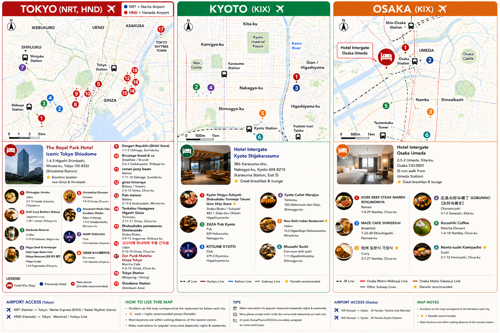

<!doctype html>
<html lang="en">
<head>  
<meta charset="UTF-8" />  
<meta name="viewport" content="width=device-width, initial-scale=1.0" />  
<title>Journey / 01 — Japan trip companion</title>  
<link rel="stylesheet" href="https://unpkg.com/leaflet@1.9.4/dist/leaflet.css" crossorigin="" />  
<style>
    :root{--ink:#24221e;--muted:#766f66;--paper:#f5f0e9;--card:#fffdf9;--line:rgba(36,34,30,.14);--accent:#bb2c25;--soft:#f2dfd9}*{box-sizing:border-box}html,body{margin:0;background:var(--paper);color:var(--ink);font-family:Inter,"Helvetica Neue",Arial,sans-serif}button{font:inherit;color:inherit}button:focus-visible{outline:2px solid var(--accent);outline-offset:3px}.app{min-height:100vh;background:var(--paper);transition:.25s}.app.night{--paper:#171819;--card:#222426;--ink:#f2eee7;--muted:#a7a39b;--line:rgba(255,255,255,.13)}.top{height:72px;padding:0 4vw;border-bottom:1px solid var(--line);display:flex;align-items:center;justify-content:space-between}.brand{display:flex;gap:11px;align-items:center}.brand-mark{width:33px;height:33px;display:grid;place-items:center;border:1px solid currentColor;border-radius:50%;font-family:Georgia;font-size:17px}.brand strong{display:block;font-size:11px;letter-spacing:.18em}.brand small{color:var(--muted);font-size:11px}.top-context{font-size:12px;color:var(--muted)}.top-context strong{margin:0 9px;color:var(--ink);font-family:Georgia;font-size:16px;font-weight:400}.top-actions{display:flex;gap:8px}.top button,.round{border:0;background:transparent;cursor:pointer}.top button{padding:8px 10px;border-radius:999px;font-size:12px}.top button:hover,.top button.active{background:var(--soft);color:var(--accent)}.intro{max-width:1440px;margin:auto;padding:50px 4vw 37px;display:flex;justify-content:space-between;align-items:end;gap:30px}.index,.eyebrow{font-size:10px;font-weight:700;letter-spacing:.14em;text-transform:uppercase;color:var(--muted)}.index{color:var(--accent);margin-bottom:15px}.index span{color:var(--muted);margin-left:10px}.intro h1{max-width:670px;margin:0;font:400 clamp(34px,4.4vw,64px)/.96 Georgia,serif;letter-spacing:-.055em}.intro p{max-width:590px;margin:18px 0 0;color:var(--muted);font-size:15px;line-height:1.65}.base{min-width:160px;padding-left:23px;border-left:1px solid var(--line);display:flex;flex-direction:column;gap:5px}.base strong{font:400 21px Georgia}.base small{color:var(--muted);font-size:11px}.tabs{max-width:1440px;margin:auto;padding:0 4vw;border-bottom:1px soli

    .flight-card{margin-top:20px;padding:10px 14px;border:1px solid var(--line);background:color-mix(in srgb,var(--soft) 32%,var(--card))}.flight-card p{margin:8px 0;color:var(--muted);font-size:11px;line-height:1.5}.flight-card a,.transport-option a,.drawer-links a{color:var(--accent);font-size:10px;font-weight:700;text-decoration:none}.transport-options{display:grid;gap:8px}.transport-option{padding:14px 0 15px;border-top:1px solid var(--line)}.transport-option-heading{display:flex;align-items:flex-start;gap:10px}.transport-option-icon{width:30px;height:30px;display:grid;place-items:center;flex:none;border-radius:50%;background:var(--soft);font-size:15px}.transport-option-heading>div{display:flex;flex-direction:column;gap:3px}.transport-option-heading strong{font:400 16px/1.15 Georgia}.transport-option-heading small{color:var(--muted);font-size:10px;line-height:1.35}.transport-stats{display:flex;gap:18px;margin:12px 0 8px 40px}.transport-stats span{display:flex;flex-direction:column;gap:3px}.transport-stats b{font-size:11px}.transport-stats small{color:var(--muted);font-size:9px;text-transform:uppercase;letter-spacing:.08em}.transport-option p{margin:0 0 8px 40px;color:var(--muted);font-size:11px;line-height:1.5}.transport-option>a{display:inline-block;margin-left:40px}.drawer-links{display:grid;gap:9px;padding-top:16px;border-top:1px solid var(--line)}.drawer-links .eyebrow{margin-bottom:2px}  
</style>  
<style>
    .landing{min-height:100vh;background:#1b1a18;color:#f7f1e8}.landing-top{height:72px;padding:0 4vw;border-bottom:1px solid rgba(255,255,255,.16);display:flex;align-items:center;justify-content:space-between}.landing-top .brand{color:#f7f1e8}.landing-top small{color:#bdb6ab;font-size:11px;letter-spacing:.08em;text-transform:uppercase}.landing-shell{max-width:1500px;margin:auto;padding:clamp(30px,6vw,80px) 4vw 55px;display:grid;grid-template-columns:minmax(250px,.42fr) minmax(0,1.58fr);align-items:center;gap:clamp(30px,6vw,100px)}.landing-copy .eyebrow{color:#e08469}.landing-copy h1{max-width:410px;margin:16px 0 20px;font:400 clamp(40px,5vw,74px)/.94 Georgia,serif;letter-spacing:-.06em}.landing-copy p{max-width:340px;color:#bdb6ab;font-size:14px;line-height:1.7}.landing-copy button{margin-top:25px;padding:13px 17px;border:1px solid #e08469;background:#b92e27;color:#fff;cursor:pointer;font-size:12px;font-weight:700;letter-spacing:.04em}.landing-copy button:hover{background:#d04b3d}.landing-meta{display:flex;gap:15px;margin-top:22px;color:#8e887f;font-size:10px;letter-spacing:.12em;text-transform:uppercase}.landing-frame{padding:10px;background:#f1ebe2;box-shadow:0 24px 70px rgba(0,0,0,.45);transform:rotate(1deg)}.landing-frame img{display:block;width:100%;height:auto}.landing-caption{max-width:1500px;margin:auto;padding:0 4vw 28px;color:#8e887f;font-size:10px;letter-spacing:.11em;text-transform:uppercase}@media(max-width:840px){.landing-shell{display:flex;flex-direction:column;align-items:stretch;padding:35px 18px 40px}.landing-copy h1{font-size:47px}.landing-copy p{font-size:13px}.landing-frame{transform:none;overflow:auto}.landing-frame img{min-width:700px;max-width:none}.landing-caption{padding:0 18px 24px}}  
</style>  
<style>
    .map-canvas.real-map{background:#e9e5de}.map-canvas.real-map:before,.map-canvas.real-map:after{display:none}.map-canvas.real-map #leaflet-map{position:absolute;inset:0;width:100%;height:100%;z-index:1}.real-map .note{z-index:500}.leaflet-control-zoom{border:1px solid rgba(36,34,30,.18)!important;box-shadow:0 5px 16px rgba(31,22,16,.1)!important}.leaflet-control-zoom a{background:var(--card)!important;color:var(--ink)!important;border-bottom-color:var(--line)!important}.leaflet-control-attribution{font-size:9px!important;background:rgba(255,253,249,.78)!important;color:#665e57!important}.leaflet-control-scale-line{border-color:#665e57!important;background:rgba(255,253,249,.76)!important;color:#665e57!important;font-size:9px!important;line-height:12px!important}.leaflet-place,.leaflet-hotel{background:transparent;border:0}.leaflet-place span{width:29px;height:29px;display:grid;place-items:center;border:1.5px solid var(--accent);border-radius:50%;background:var(--card);color:var(--accent);font:700 12px Arial;box-shadow:0 4px 14px rgba(31,22,16,.18)}.leaflet-place.danielle span{border-color:#9e2d31;color:#9e2d31}.leaflet-place.favorite span{background:#f3e7c9;border-color:#b1841d;color:#9c7114}.leaflet-place.selected span{transform:scale(1.24);background:var(--accent);color:#fff;box-shadow:0 0 0 6px color-mix(in srgb,var(--accent) 13%,transparent)}.leaflet-hotel span{width:54px;height:54px;display:grid;place-items:center;border:3px solid #fff;border-radius:50%;background:var(--accent);color:#fff;font:700 24px Georgia;box-shadow:0 8px 18px rgba(34,26,19,.25),0 0 0 5px color-mix(in srgb,var(--accent) 20%,transparent)}.route-panel{margin-top:14px;padding-top:13px;border-top:1px solid var(--line)}.route-panel>div{margin-bottom:8px;color:var(--muted);font-size:10px;font-weight:700;letter-spacing:.1em;text-transform:uppercase}.route-buttons{display:grid;grid-template-columns:repeat(4,1fr);gap:5px}.route-buttons button{min-height:34px;padding:0 4px;border:1px solid var(--line);background:transparent;color:var(--ink);cursor:pointer;font-size:10px}.route-buttons button:hover{border-color:var(--accent);background:var(--soft);color:var(--accent)}.route-help{margin:9px 0 0!important;font-size:10px!important;font-weight:400!important;letter-spacing:0!important;text-transform:none!important}  
</style>  
<style>
    .row.selected .avatar { background: var(--accent); border-color: var(--accent); color: #fff; box-shadow: 0 0 0 4px color-mix(in srgb, var(--accent) 14%, transparent); }
    .filters { align-items: flex-start; }
    .chips { flex-wrap: wrap; overflow: visible; }
    .list { max-height: none; overflow: visible; }
    .marker.selected b, .row.selected .avatar b, .leaflet-place.selected span b { filter: grayscale(1) brightness(0) invert(1); }  
</style>
<style>
.drawer-panel{box-sizing:border-box;overflow-y:auto;overscroll-behavior:contain;-webkit-overflow-scrolling:touch;}
@media(max-width:560px){
  .drawer{display:flex;align-items:flex-end;justify-content:center;overflow:hidden;padding-top:env(safe-area-inset-top);}
  .drawer-panel{width:100%;height:auto;max-height:calc(100dvh - 10px);min-height:0;margin-top:0;padding:18px 18px calc(28px + env(safe-area-inset-bottom));overflow-y:auto;overscroll-behavior:contain;-webkit-overflow-scrolling:touch;box-shadow:0 -12px 35px rgba(20,18,16,.15);}
  .drawer-panel h2{max-width:270px;font-size:28px;line-height:1.04;}
  .transport-options{gap:0;}
  .transport-stats{flex-wrap:wrap;gap:12px 18px;}
  .transport-option p{margin-right:0;}
  .drawer-links{gap:10px;padding-bottom:4px;}
}
</style>
</head>
<body>  
<div id="app" class="app"></div>  
<script>    
const cities={      
tokyo:{name:'Tokyo',kanji:'東京',region:'Kanto · 04—08 Oct',kicker:'Neon edges, quiet corners',desc:'Start with Shiodome as your base, then follow the city west into Shibuya, Shinjuku and Ginza.',accent:'#bb2c25',soft:'#f2dfd9',hotel:{name:'The Royal Park Hotel Iconic Tokyo Shiodome',neighborhood:'Shiodome · Minato',address:'1-6-3 Higashi Shimbashi, Minato-ku, Tokyo',station:'Shiodome Station',note:'Excellent location near Ginza & Shimbashi.',image:'tokyo-blue-hour.png',x:57,y:56},labels:[['SHINJUKU',18,22],['SHIBUYA',15,64],['GINZA',52,65],['UENO',67,18],['ASAKUSA',83,22],['SHIODOME',60,48,true]],places:[['Kirimugiya Jinroku','Japanese','Kanda','う',42,47,'fav'],['Craft Curry Brothers Shibuya','Curry','Shibuya','カ',18,70],['Starbucks Reserve Roastery Tokyo','Cafe','Meguro','☕',26,78],['Wagyu Steak & Hamburger Shibuya','Wagyu','Shibuya','肉',29,61],['Chinkashisai Ginzaten','Japanese','Ginza','中',53,71],['Amusement Wanko Soba Kurukuru Wanko','Japanese','Shinjuku','そ',19,36],['WARP SHINJUKU','Club','Shinjuku','♫',25,28,'fav'],['元祖油堂 油そば 歌舞伎町店','Ramen','Kabukicho','麺',31,39,'fav'],['Donguri Republic','Japanese','Tokyo Skytree Town','森',84,38,'danielle'],['Ghibli Store in Tokyo Skytree Town Solamachi','Japanese','Tokyo Skytree Town','ト',78,29,'danielle'],['Bricolage bread & co','Breakfast','Daikanyama','麦',33,78,'danielle'],['ramen jazzy beats','Ramen','Sumida','♫',74,50,'danielle'],['Ginza Kimuraya','Japanese','Ginza','桜',61,66,'danielle'],['Pain Maison','Breakfast','Ginza','麦',57,75,'danielle'],['Tonkatsu Hasegawa Higashi Ginza','Japanese','Higashi-Ginza','豚',65,78,'danielle'],['Shabushabu Yamawarau Omotesando','Japanese','Omotesando','鍋',39,55,'danielle'],['고다이메 하나야마우동 긴자점','Japanese','Ginza','う',56,61,'danielle'],['Zen Punk Matcha Ginza Tokyo','Cafe','Ginza','茶',49,77,'danielle'],['Shiodome Station','Japanese','Shiodome','駅',57,47,'danielle']]},      
kyoto:{name:'Kyoto',kanji:'京都',region:'Kansai · 09—12 Oct',kicker:'Temple quiet, evening lanterns',desc:'Keep the center compact: Karasuma mornings, Gion after dark, and a measured drift toward Fushimi Inari.',accent:'#187a58',soft:'#dcebe1',hotel:{name:'Hotel Intergate Kyoto Shijokarasuma',neighborhood:'Shijokarasuma · Nakagyo',address:'386 Karasuma-cho, Nakagyo-ku, Kyoto 604-8215',station:'Karasuma Station, Exit 5',note:'Great breakfast & lounge.',x:45,y:48},labels:[['KAMIGYO-KU',22,18],['KARASUMA',43,36],['GION / HIGASHIYAMA',77,26],['NAKAGYO-KU',47,56,true],['SHIMOGYO-KU',39,77],['KAMO RIVER',82,56]],places:[['Kyoto Wagyu Sukiyaki Shabushabu Tominojo Takumi Gion Shijo Store','Wagyu','Gion Shijo','肉',77,51,'fav'],['ZAZA Pub Kyoto','Nightlife','Nakagyo','◒',37,51],['KITSUNE KYOTO','Club','Higashiyama','♫',82,43],['Kyoto Cutlet Warajiya','Japanese','Shijyo','豚',48,64],['New Delhi Indian Restaurant','Japanese','Higashiyama','カ',75,68,'danielle'],['Musashi Sushi','Sushi','Shijyo','鮨',57,82]]},      
osaka:{name:'Osaka',kanji:'大阪',region:'Kansai · 13—16 Oct',kicker:'Big flavors, easy nights',desc:'Use Umeda as your north-star base, then follow the city south to Namba and Shinsekai.',accent:'#d46617',soft:'#f3e1d0',hotel:{name:'Hotel Intergate Osaka Umeda',neighborhood:'Umeda · Kita',address:'2-5-2 Umeda, Kita-ku, Osaka 530-0001',station:'Umeda Station',note:'Approx. 5-min walk from Umeda Station · Great breakfast & lounge.',image:'osaka-umeda-lounge.png',website:'https://www.intergatehotels.jp/osaka-umeda/en/',x:47,y:34},labels:[['SHIN-OSAKA',22,14],['UMEDA',48,26,true],['OSAKA CASTLE',80,25],['SHINSAIBASHI',65,51],['NAMBA',46,63],['SHINSEKAI',30,81]],places:[['KOBE BEEF STEAK RAMEN ROKUNOMIYA','Ramen','Namba','麺',47,69],['MAZE CAFE SHINSEKAI','Breakfast','Shinsekai','☕',31,78],['信州 일본식 가정식','Curry','Namba','カ',54,63,'fav']]}    
};    
const filterList=[['all','All places'],['danielle','Danielle’s picks'],['fav','★ Favorites'],['Breakfast','Breakfast'],['Ramen','Ramen'],['Sushi','Sushi'],['Japanese','Japanese'],['Cafe','Cafes'],['Nightlife','Nightlife']];    
const transportPlans={      
tokyo:{airport:'Narita International Airport',code:'NRT',flightLeg:'San Diego (SAN) → Tokyo (NRT)',flightNote:'Use your airline itinerary for the flight number, terminal, and arrival time. Narita’s live board is the final check on travel day.',terminalNote:'International arrival: clear immigration and customs, then follow signs to the rail stations or airport bus counters.',airportHref:'https://www.narita-airport.jp/en/flight/',options:[['train','Narita Express (N’EX)','Narita Airport → Tokyo / Shimbashi → Shiodome','≈ 70 km','≈ 70–90 min','Reserved-seat JR service; allow time for the short city transfer to the hotel.','https://www.jreast.co.jp/multi/en/nex/','JR East N’EX'],['train','Keisei Skyliner','Narita Airport → Nippori / Ueno → Shiodome','≈ 70 km','≈ 65–85 min','Fast reserved-seat option to central Tokyo, then continue by JR or taxi.','https://www.keisei.co.jp/keisei/tetudou/skyliner/us/skyliner/','Keisei Skyliner'],['bus','Airport limousine bus','Narita Airport → Tokyo hotel area / Shiodome','≈ 70 km','≈ 90–120 min','Comfortable with luggage; traffic makes the arrival time variable.','https://www.narita-airport.jp/en/access/bus/','Narita bus access'],['taxi','Taxi / pre-booked car','Narita Airport → Tokyo hotel','≈ 70 km','≈ 70–100 min','Door-to-door, but traffic and late-night surcharges can materially change the fare.','https://www.narita-airport.jp/en/access/taxi/','Narita taxi guidance']],links:[['Narita arrivals & terminals','https://www.narita-airport.jp/en/flight/'],['Narita access overview','https://www.narita-airport.jp/en/access/'],['Hotel official site','https://www.royalparkhotels.co.jp/en/ic/tokyoshiodome/']]},      
kyoto:{airport:'Kansai International Airport',code:'KIX',flightLeg:'KIX → Kyoto Station → Shijokarasuma',flightNote:'Kyoto has no commercial international airport; KIX is the practical international gateway for this chapter.',terminalNote:'After immigration and customs, follow signs to Kansai-Airport Station. Kyoto Station is the simplest rail anchor for the hotel.',airportHref:'https://www.kansai-airport.or.jp/en/flight/search',options:[['train','JR Limited Express HARUKA','Kansai Airport → Kyoto Station → Shijokarasuma','≈ 100 km','≈ 90–110 min','The cleanest airport-to-Kyoto rail connection; finish with subway, taxi, or a short walk.','https://www.westjr.co.jp/global/en/ticket/cp/umekitacp/','JR-West HARUKA'],['bus','Airport limousine bus','KIX → Kyoto Station Hachijo-guchi → hotel','≈ 100 km','≈ 105–135 min','Useful with large luggage; road traffic makes the last-mile timing variable.','https://www.kansai-airport.or.jp/en/access/from-airport','KIX access'],['taxi','Taxi / pre-booked car','KIX → Hotel Intergate Kyoto Shijokarasuma','≈ 100 km','≈ 100–140 min','Door-to-door convenience with a high, variable fare; reserve only after checking luggage and arrival time.','https://www.kansai-airport.or.jp/en/access/from-airport','KIX access guidance'],['walk','Last mile from Karasuma','Karasuma Station → Hotel Intergate Kyoto Shijokarasuma','≈ 0.4 km','≈ 5–8 min','A short final walk after arriving in central Kyoto; exact exit matters with luggage.','https://www.google.com/maps/search/?api=1&query=Hotel%20Intergate%20Kyoto%20Shijokarasuma','Open hotel in Maps']],links:[['KIX flights','https://www.kansai-airport.or.jp/en/flight/search'],['KIX access overview','https://www.kansai-airport.or.jp/en/access/from-airport'],['Hotel official site','https://www.intergatehotels.jp/']]},      
osaka:{airport:'Kansai International Airport',code:'KIX',flightLeg:'Osaka (KIX) → Busan / Gimhae (PUS)',flightNote:'This is the international departure leg in your current plan. Confirm airline, departure terminal, and check-in cutoff on the live airport board and with the airline.',terminalNote:'For an international departure, confirm the terminal on the airport flight board. Gates and counters can change, so keep the official board and airline app handy.',airportHref:'https://www.kansai-airport.or.jp/en/flight/search?direction=DEP',options:[['train','JR HARUKA + city connection','Umeda / Osaka Station → Tennoji → Kansai Airport','≈ 50 km','≈ 70–90 min','Allow a transfer from the hotel area to the JR airport service and leave a generous check-in buffer.','https://www.westjr.co.jp/global/en/ticket/cp/umekitacp/','JR-West airport rail'],['train','Nankai Rapi:t','Umeda → Namba → Kansai Airport','≈ 50 km','≈ 75–95 min','Fastest Nankai service from Namba; add time for the Umeda-to-Namba transfer.','https://www.nankai.co.jp/en_railway/traffic/kix.html','Nankai Rapi:t'],['bus','KIX limousine bus','Herbis Osaka / Umeda → Kansai Airport','≈ 50 km','≈ 60–90 min','Convenient from Umeda with luggage; road traffic can change the departure buffer.','https://www.kansai-airport.or.jp/en/access/from-airport','KIX access'],['taxi','Taxi / pre-booked car','Hotel Intergate Osaka Umeda → Kansai Airport','≈ 50 km','≈ 50–80 min','Door-to-door but expensive and traffic-sensitive; book with a flight-day pickup buffer.','https://www.kansai-airport.or.jp/en/access/from-airport','KIX access guidance']],links:[['KIX live departure board','https://www.kansai-airport.or.jp/en/flight/search?direction=DEP'],['KIX access overview','https://www.kansai-airport.or.jp/en/access/from-airport'],['Gimhae / Busan airport info','https://www.airport.co.kr/gimhaeeng/index.do'],['Hotel official site','https://www.intergatehotels.jp/osaka-umeda/en/']]}    
};    
let landing=true,city='tokyo',filter='all',selected='hotel',showAll=false,today=false,night=false,planned=[];    
const $=s=>document.querySelector(s);    
const slug=s=>s.toLowerCase().replace(/[^a-z0-9]+/g,'-');    
function placeKind(x){const name=x[0].toLowerCase(),cat=x[1].toLowerCase();if(name.includes('donguri')||name.includes('ghibli'))return 'shopping';if(name.includes('station'))return 'transit';if(cat==='cafe'||name.includes('cafe'))return 'cafe';if(cat==='breakfast')return 'bakery';if(cat==='sushi')return 'sushi';if(cat==='wagyu')return 'meat';if(cat==='nightlife'||cat==='club')return 'nightlife';return 'food'}    
function iconFor(x){return {food:'🍜',cafe:'☕',bakery:'🥐',sushi:'🍣',meat:'🥩',nightlife:'🍷',shopping:'🛍️',transit:'🚉'}[placeKind(x)]}    
Object.values(cities).forEach(c=>c.places.forEach(place=>{place[3]=iconFor(place)}));    
function data(){const c=cities[city];let p=c.places.filter(x=>filter==='all'||filter==='danielle'&&x[6]==='danielle'||filter==='fav'&&x[6]==='fav'||filter.toLowerCase()===x[1].toLowerCase()||filter==='Nightlife'&&(x[1]==='Nightlife'||x[1]==='Club'));return {c,p}}    
function render(){if(landing){document.documentElement.style.setProperty('--accent','#bb2c25');document.documentElement.style.setProperty('--soft','#f2dfd9');$('#app').className='app landing';$('#app').innerHTML=`<header class="landing-top"><div class="brand"><span class="brand-mark">日</span><div><strong>JOURNEY / 01</strong><small>Japan trip companion</small></div></div><small>Source map · Tokyo / Kyoto / Osaka</small></header><main class="landing-shell"><section class="landing-copy"><span class="eyebrow">The original trip map</span><h1>A visual index for the journey.</h1><p>Start with the map that shaped the trip, then move into the interactive companion for neighborhoods, hotels, saved places, and routes.</p><button onclick="landing=false;render()">Open interactive trip map ↗</button><div class="landing-meta"><span>3 cities</span><span>Hotels + places</span><span>October 2026</span></div></section><figure class="landing-frame"></figure></main><div class="landing-caption">Reference map · supplied trip structure · interactive layer follows</div>`;return}const {c,p}=data();document.documentElement.style.setProperty('--accent',c.accent);document.documentElement.style.setProperty('--soft',c.soft);$('#app').className='app'+(night?' night':'');$('#app').innerHTML=`<header class="top"><div class="brand"><span class="brand-mark">日</span><div><strong>JOURNEY / 01</strong><small>Japan trip companion</small></div></div><div class="top-context"><span>Next chapter</span><strong>${c.name}</strong><span>/</span><span>${c.region}</span></div><div class="top-actions"><button class="${today?'active':''}" onclick="toggleToday()">◫ ${today?'Explore map':'Today'}</button><button onclick="toggleNight()">${night?'◉ Day':'◐ Night'}</button></div></header><section class="intro"><div><div class="index">01 <span>Trip map</span></div><h1>${c.kicker}</h1><p>${c.desc}</p></div><div class="base"><span class="eyebrow">Base</span><strong>${c.hotel.neighborhood}</strong><small>Hotel anchored · ${c.name}</small></div></section><nav class="tabs"><span>Your route</span><div class="t
    
function hotelAndPlaces(c,p){const place=c.places.find(x=>slug(x[0])===selected);return `<article class="hotel-card"><div class="card-kicker"><b>⌂</b><span>Your hotel</span><i></i></div>${c.hotel.image?``:''}<div class="hotel-body"><div class="hotel-heading"><div><span class="eyebrow">Basecamp · ${c.hotel.neighborhood}</span><h2>${c.hotel.name}</h2></div><span class="hotel-number">01</span></div><div class="hotel-note">${c.hotel.note}</div><div class="hotel-meta">⌖ ${c.hotel.station}<br>⌖ ${c.hotel.address}</div><div style="display:flex;gap:14px;flex-wrap:wrap"><button class="action" onclick="maps('${c.hotel.name}')">Open hotel in Maps ↗</button>${c.hotel.website?`<a class="action" href="${c.hotel.website}" target="_blank" rel="noreferrer">Official hotel site ↗</a>`:''}</div></div></article>${place?detail(place,c):`<div class="detail-note">Select a place on the map to see its travel details.</div>`}<div class="list-head"><div><span class="eyebrow">Saved places</span><strong>${p.length} to explore</strong></div><small>Closest to hotel⌄</small></div><div class="list">${p.map(x=>`<div class="row ${selected===slug(x[0])?'selected':''}"><button class="row-main" onclick="selectPlace('${slug(x[0])}')"><span class="avatar kind-${placeKind(x)}">${iconFor(x)}</span><span class="row-copy"><strong>${x[0]}</strong><small>${x[1]} · ${x[2]} ${x[6]?'· '+(x[6]==='fav'?'★ Favorite':'Danielle’s pick'):''}</small></span></button><button class="add" onclick="plan('${slug(x[0])}')">${planned.includes(slug(x[0]))?'✓':'+'}</button></div>`).join('')}</div><button class="transport" onclick="openTransport()">▣ <span>Airport + transit notes</span><span>↗</span></button>`}    
function detail(x,c){return `<article class="detail"><div class="detail-top"><b>${x[6]==='fav'?'★':'0'+(c.places.indexOf(x)+1)}</b><span>${x[1]}</span><span class="badge">${x[6]?'✦ '+(x[6]==='fav'?'Especially recommended':'Danielle’s pick'):''}</span></div><h2>${x[0]}</h2><p>A saved stop for the ${c.name} chapter. Keep the details light until the destination is verified.</p><div class="detail-grid"><div><span>Neighborhood</span><b>${x[2]}</b></div><div><span>Nearest station</span><b>Not supplied</b></div><div><span>Distance from hotel</span><b>Not verified</b></div><div><span>Travel time</span><b>Add route to check</b></div></div><div class="detail-note">ⓘ Opening hours weren’t supplied for this place.</div><div class="detail-actions"><button class="primary" onclick="plan('${slug(x[0])}')">${planned.includes(slug(x[0]))?'✓ Added to today':'+ Add to today'}</button><button class="secondary" onclick="maps('${x[0]}')">↗ Google Maps</button></div></article>`}    
function todayPanel(c,p){const picks=p.filter(x=>x[6]).slice(0,4);return `<div class="detail"><span class="eyebrow">◫ Today in ${c.name}</span><h2>A good day has a little shape.</h2><p>Start close to ${c.hotel.neighborhood}, then let the city widen at its own pace.</p>${picks.map((x,i)=>`<button class="row-main" style="width:100%;border-bottom:1px solid var(--line)" onclick="selectPlace('${slug(x[0])}')"><span class="avatar">0${i+1}</span><span class="row-copy"><strong>${x[0]}</strong><small>${x[2]} · ${x[1]}</small></span>→</button>`).join('')}<div class="detail-note">${planned.length?'Your day: '+planned.length+' place(s) added.':'Choose a place from the map or list to start your day.'}</div></div>`}    
function changeCity(id){city=id;filter='all';selected='hotel';showAll=false;render()}function setFilter(v){filter=v;render()}function selectPlace(v){selected=v;render()}function selectHotel(){selected='hotel';render()}function toggleAll(){showAll=!showAll;render()}function toggleToday(){today=!today;render()}function toggleNight(){night=!night;render()}function plan(v){planned=planned.includes(v)?planned.filter(x=>x!==v):[...planned,v];render()}function maps(q){window.open('https://www.google.com/maps/search/?api=1&query='+encodeURIComponent(q),'_blank')}function openTransport(){const c=cities[city],plan=transportPlans[city];const modeIcon={train:'🚆',bus:'🚌',taxi:'🚕',walk:'⌖'};const options=plan.options.map(o=>`<article class="transport-option"><div class="transport-option-heading"><span class="transport-option-icon">${modeIcon[o[0]]}</span><div><strong>${o[1]}</strong><small>${o[2]}</small></div></div><div class="transport-stats"><span><b>${o[3]}</b><small>distance</small></span><span><b>${o[4]}</b><small>typical time</small></span></div><p>${o[5]}</p><a href="${o[6]}" target="_blank" rel="noreferrer">${o[7]} ↗</a></article>`).join('');const links=plan.links.map(l=>`<a href="${l[1]}" target="_blank" rel="noreferrer">${l[0]} ↗</a>`).join('');document.body.insertAdjacentHTML('beforeend',`<div class="drawer" onclick="this.remove()"><div class="drawer-panel" onclick="event.stopPropagation()"><button class="round close" onclick="this.closest('.drawer').remove()">×</button><span class="eyebrow">▣ Airport + hotel transfer</span><h2>Arrive, then move lightly.</h2><section class="flight-card"><div class="route"><div>✈</div><div><small>International flight leg · ${plan.code}</small><b>${plan.flightLeg}</b></div></div><p>${plan.flightNote}</p><a href="${plan.airportHref}" target="_blank" rel="noreferrer">Open ${plan.code} live flight information ↗</a></section><div class="route"><div>⌖</div><div><small>From ${plan.airport} to your base</small><b>${c.hotel.name}</b><p>${plan.terminalNote}</p></div></div><div class="transport-options">${options}</div><div class="drawer-links"><span class="eyebrow">Useful links</span>${links}</div><div class="route"><div>ⓘ</div><div><p>Times and distances are planning estimates, not live quotes. Use the Google Maps route buttons on each place card for current door-to-door options.</p></div></div></div></div>`)}    
render();  
</script>  
<script src="https://unpkg.com/leaflet@1.9.4/dist/leaflet.js" crossorigin=""></script>  
<script>    
const neighborhoodCoords={      
tokyo:{'Shiodome · Minato':[35.6605,139.7634],'Shiodome':[35.6605,139.7634],'Kanda':[35.6917,139.7708],'Shibuya':[35.6580,139.7016],'Meguro':[35.6440,139.6980],'Ginza':[35.6717,139.7650],'Shinjuku':[35.6938,139.7034],'Kabukicho':[35.6960,139.7037],'Tokyo Skytree Town':[35.7101,139.8107],'Sumida':[35.7040,139.8050],'Daikanyama':[35.6481,139.7032],'Omotesando':[35.6653,139.7123],'Higashi-Ginza':[35.6695,139.7670]},      
kyoto:{'Shijokarasuma · Nakagyo':[35.0062,135.7591],'Nakagyo':[35.0100,135.7680],'Gion Shijo':[35.0037,135.7788],'Higashiyama':[35.0042,135.7790],'Shijyo':[35.0030,135.7590]},      
osaka:{'Umeda · Kita':[34.7055,135.4970],'Namba':[34.6670,135.5010],'Shinsekai':[34.6525,135.5060]}    
};    
const cityCenters={tokyo:[35.675,139.748],kyoto:[35.012,135.768],osaka:[34.682,135.505]};    
let leafletMap;    
function placeCoord(cityId,place,index){const lookup=neighborhoodCoords[cityId]||{};const base=lookup[place[2]]||cityCenters[cityId];const nudge=((index%3)-1)*.0011;return [base[0]+nudge,base[1]+(((index%4)-1.5)*.0012)]}    
function openDirections(placeName,mode,transitMode){const c=cities[city];const params=new URLSearchParams({api:'1',origin:c.hotel.name+', '+c.hotel.address,destination:placeName+', '+c.name+', Japan',travelmode:mode});if(transitMode)params.set('transit_mode',transitMode);const url='https://www.google.com/maps/dir/?'+params.toString();const tab=window.open(url,'_blank');if(!tab)window.location.href=url}    
function addDirectionsPanel(){const detail=document.querySelector('.detail');const place=cities[city].places.find(x=>slug(x[0])===selected);if(!detail||!place||document.querySelector('.route-panel'))return;const panel=document.createElement('div');panel.className='route-panel';panel.innerHTML='<div>Measure route in Google Maps</div><div class="route-buttons"><button onclick="openDirections('+JSON.stringify(place[0])+',\'driving\')">Taxi / car</button><button onclick="openDirections('+JSON.stringify(place[0])+',\'transit\',\'train\')">Train</button><button onclick="openDirections('+JSON.stringify(place[0])+',\'transit\',\'bus\')">Bus</button><button onclick="openDirections('+JSON.stringify(place[0])+',\'walking\')">Walk</button></div><div class="route-help">Google Maps will calculate the live duration, transfer details, and current route options.</div>';detail.appendChild(panel)}    
function buildLeaflet(){if(!window.L)return;const canvas=document.querySelector('.map-canvas');if(!canvas)return;canvas.classList.add('real-map');canvas.innerHTML='<div id="leaflet-map"></div><span class="note">Neighborhood-level pins · <button onclick="toggleAll()">'+(showAll?'Show curated view':'Show all places')+'</button></span>';if(leafletMap){leafletMap.remove();leafletMap=null}const c=cities[city];leafletMap=L.map('leaflet-map',{scrollWheelZoom:false,zoomControl:true}).setView(cityCenters[city],12);L.tileLayer('https://server.arcgisonline.com/ArcGIS/rest/services/World_Street_Map/MapServer/tile/{z}/{y}/{x}',{maxZoom:19,attribution:'© Esri, HERE, Garmin, USGS, NGA'}).addTo(leafletMap);L.control.scale({metric:true,imperial:false,position:'bottomleft'}).addTo(leafletMap);const visible=showAll?c.places:c.places.filter(x=>x[6]||slug(x[0])===selected);const points=[];visible.forEach((place,index)=>{const pos=placeCoord(city,place,index);points.push(pos);const klass='leaflet-place '+(place[6]||'')+' '+(selected===slug(place[0])?'selected':'');const icon=L.divIcon({className:klass,html:'<span><b>'+place[3]+'</b></span>',iconSize:[29,29],iconAnchor:[14,14]});const marker=L.marker(pos,{icon}).addTo(leafletMap).bindTooltip(place[0],{direction:'top',offset:[0,-14]});marker.on('click',()=>selectPlace(slug(place[0])))});const hotelPos=neighborhoodCoords[city][c.hotel.neighborhood]||cityCenters[city];points.push(hotelPos);const hicon=L.divIcon({className:'leaflet-hotel',html:'<span>⌂</span>',iconSize:[54,54],iconAnchor:[27,27]});L.marker(hotelPos,{icon:hicon}).addTo(leafletMap).bindTooltip('Your hotel · '+c.hotel.name,{direction:'top',offset:[0,-22]}).on('click',selectHotel);if(points.length)leafletMap.fitBounds(points,{padding:[35,35],maxZoom:13});setTimeout(()=>leafletMap.invalidateSize(),80)}    
function zoomMap(direction){if(!leafletMap)return;direction>0?leafletMap.zoomIn():leafletMap.zoomOut()}    
function resetMap(){if(leafletMap)leafletMap.setView(cityCenters[city],12)}    
function wireMapControls(){const buttons=document.querySelectorAll('.map-controls button');if(buttons[0])buttons[0].onclick=()=>zoomMap(1);if(buttons[1])buttons[1].onclick=()=>zoomMap(-1);if(buttons[2])buttons[2].onclick=resetMap}    
function addIconLegend(){const legend=document.querySelector('.legend');if(legend&&!legend.querySelector('.icon-key'))legend.insertAdjacentHTML('beforeend','<span class="icon-key">🍜 Food · ☕ Cafe · 🛍 Place · 🍷 Nightlife</span>');document.querySelectorAll('.marker,.avatar').forEach(element=>{if(!element.querySelector('b'))element.innerHTML='<b>'+element.textContent+'</b>'})}    
function buildFilteredLeaflet(){const c=cities[city];const originalPlaces=c.places;const filteredPlaces=filter==='all'?originalPlaces:data().p;const previousShowAll=showAll;c.places=filteredPlaces;showAll=true;buildLeaflet();showAll=previousShowAll;c.places=originalPlaces;const note=document.querySelector('.map-canvas .note');if(note)note.textContent='All matching saved places are shown'}    
const originalRender=render;render=function(){originalRender();addIconLegend();wireMapControls();buildFilteredLeaflet();addDirectionsPanel()};buildFilteredLeaflet();addIconLegend();wireMapControls();addDirectionsPanel();  
</script>
</body>
</html>
